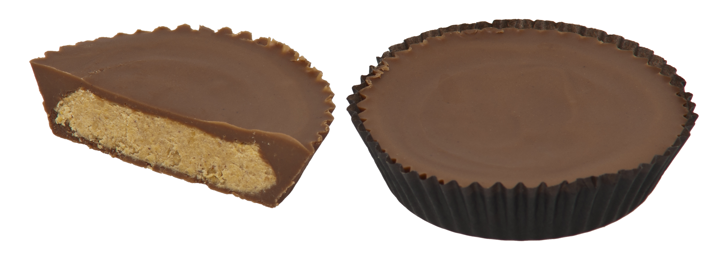

Catheine loves certain snacks, but she also loves to go to play hockey. She plays hockey for the "goal diggers". This is a D level hocky team where woman that are looking for excersize can go to play hockey, as well as play some competetive matches. The team consistantly wins tournaments in their division, and Catherine recieved an umbrella as the prize for winning the "April Showers" tournament.